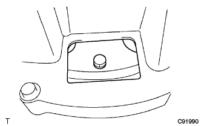
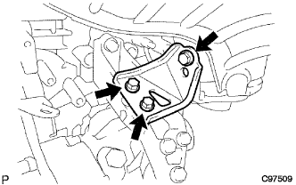
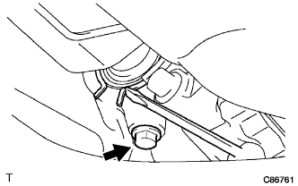

Partial engine ASSY (1NZ-FE (4WD)) Installation |
| 1. Exhaust manifold installation |
 |
Tighten the exhaust manifold in the order of the figure via the new exhaust manifold tsu head gasket.
| 2. Exhaust manifold Heat Insulator No.1 Installation |
With four bolts, attach the exhaust manifold heat insulator No.1.
| 3. Kunenhe sensor installation |
 |
Use SST to attach Kunen Hena to the exhaust manifold.
reference)Connect the clamp and connector.
| 4. E.F.I. Water Tenpalacha Sensor Mounting |
Use a deep socket wrench 19mm via a new gasket to attach the E.F.I. Water Tenpalacha Sensor.
| 5. Knock control sensor installation |
 |
At the nut, attach the knock control sensor.
Connect the knock control sensor connector.
| 6. Installation of engine oil pressure switching |
Apply 1324 adheriv.
| * 1 | Adherive 1324 |
Use a deep socket wrench (24mm) to attach an oil pressure switch.
Connect a connector for oil pressure switch.
| 7. Mounting thermostat |
Attach a new gasket to the thermostat.
 |
Attach the thermostat with a ziggle valve on the upper side as shown in the figure.
| 8. Mounting a water inlet |
With two nuts, attach the water -inlet W / radiator outlet hose.
| 9. Water bypass pipe No.1 installation |
Put the water bypass pipe No.1 with two bolts and two nuts via a new gasket.
| 10. Installation of oil level gauge guide |
Apply the engine oil to the new O -ring and attach it to the oil level gauge guide.
Attach the oil level gauge guide with bolts.
Attach the oil level gauge.
| 11. Intake manifold installation |
 |
Attach a new gasket to Intake Mani Hold.
After temporary tightening the intake manifold in the order of the figure, tighten it with a specified torque.
Connect the wire harness to the intake mani -hold.
With two bolts, attach a vacuum tube for the brake booster.
| 12. Alternator Assorted |
 |
Temporarily attach the alternator with a fixing bolt B.
 |
After tentatively attaching the fan belt agasting bar with bolt A and nuts, the alternator is reached to the cylinder block side to tighten the nut.
Attach a connector and wire harness clamp.
Attach the+B terminal terminal with the nut.
Attach the terminal cap.
| 13. Ignition coil No.1 installation |
Attach 4 ignition coils with four bolts.
| 14. Drive plate & ring gear SUB-ASSY installation |
Use SST to fix the crankshaft Dampa.
Drive plate & ring gear installation
Clean the bolt and screw holes.
Apply Shib 1324 to the bolt to ad.
Tighten the bolt in the order of the figure.
| 15. Automatic Transxle ASSY installation |
 |
Confirm that the engine has a knockpin.
Place the engine and the transxle ASSY, match the knockpin and knockpin hole, and tighten the seven bolts in the figure.
Apply Adherive 1324 to six torque converter set bolts.
|  |
Tighten 6 torque converter set bolts.
| 16. Transfer ASSY installation |
Attach the transfa ASSY to the Transxle ASSY.
 |
Attach 6 nuts.
| 17. Transfastifuna Plate RH installation |
 |
With 5 bolts, attach the Transfastifuna plate RH.
| 18. Transfastifuna Plate CTR installation |
 |
With 5 bolts, attach the Transfastifna Plate CTR.
| 19. Manifold support bracket installation |
|  |
With three bolts, attach a manifold support bracket.
| 20. Installation of engine mounting bracket RR |
 |
With three bolts, attach the engine mounting bracket RR.
| 21. Starter Assisted |
Attach the starter ASSY with two bolts.
Connect the connector.
Attach 30 terminals with nuts.
Close the terminal kyatsup.
| 22. Fly Wheel Housing Housing Side Cover Installation |
 |
The protrusion is completely inserted, and the protrusion is inserted in the oil pan while pressing the protrusions along the cylindest.
| 23. Exhaust pipe asser installation |
 |
Use caliper to measure the free length of the compression spring.
 |
The new gasket is gradually driven to the exhaust manifold using a wood piece and a hammer.
| * 1 | Fragment |
| * 2 | gasket |
| * 3 | Exhaust manifold |
| * 4 | Exhaust pipe ASSY FR |
 | Front of a vehicle |
With two bolts and two compression springs, the exhaust pipe ASSY FR is attached to the exhaust manifold.
| 24. Front suspension cross member SUB-ASSY installation |
In the bolt, attach the engine mounting insulator RR and the engine mounting bracket RR.
Remove the two bolts and remove the two engine hangers.
At the bolt, attach a radio setting capacitor.
At the bolt, attach the oxygiensen seashilling bracket.
| 25. Power steering link assertion |
With two bolts, attach the power steering assy W/Vane pump.
| 26. Bane pump assignment |
Temporarily attach the vane pump ASSY with two bolts.
Connect the connector.
Attach the vane pump V belt.
Adjust the tension of the V belt and tighten the bolt B for adjustment.
Tighten the fixing bolt A.
| 27. Connector connection |
 |
Connect the speedometer sensor connector, transmission wire catnector, neutral start switch connector and Revolution Sensor Conector.
| 28. Engine ASSY W/Transxle installation |
Set the height adjustment type and plate lift attachment and set the engine lifter.
With four bolts, tentatively assembles the engine ASSY W/Transxle and front suspension cross member.
With two bolts, attach the engine mounting insulator LH.
 |
Attach the engine mounting insulator RH with 5 bolts and nuts.
 |
Insert the SST into the suspension cross member RH side and the vehicle RH side.
| *a | Standard hole |
 |
Temporarily tighten in the order of bolt A and b.
 | Front of a vehicle |
Insert the SST into the suspension cross member RH side and the vehicle RH side and tighten with a specified torque.
 |
Insert the SST into the suspension cross member LH side and the vehicle LH side.
| *a | Standard hole |
Temporarily tighten in the order of bolt A and b.
| Front of a vehicle |
Insert the SST into the suspension cross member LH side and the vehicle LH side and tighten with a specified torque.
With four bolts, attach the front suspension Menbarin Housing LH and RH.
| 29. Front drive shaft Assisted |
Apply the auto fluid type T-IV to the spline of the inboord joint Assy LH.
 |
Inn -board joint Assy LH spline and use a brass bar and hammer to insert the front drive shaft ASSY LH.
| 30. Front drive shaft Assisted |
Apply an auto fluid type T-IV to the spline of the innboord joint Assem.
Combine the shaft spline and ensure the drive shaft ASSY RH.
|  |
Use a square axis flather to attach a drive shaft bearing bracket bracket holesnap ring to a bearing bracket and attach a new bearing bracket bolt No.1.
| 31. Lonxle Assulation LH installation |
 |
Press the front axle Assel ASSY LH to the outside of the vehicle, and insert the sprine of the front drive shaft ASSY LH on the front axle ASSY LH and insert it.
 |
Attach the front axle asser to the shock absorber, insert two bolts from the front of the vehicle, and tighten the two nuts.
| 32. Lonxle Assuled RH installation |
| 33. Tie rod end sub-assy LH installation |
Attach the tie rod end LH to the steering knuckle and tighten it with a castle nut.
Attach a new clip.
| 34. Tie rod end sub-assy RH installation |
| 35. Front suspension Lower arm No.1 LH installation |
Attach to the front suspension Rower arm No.1 RH steering knuckle and tighten with a castle nut.
Attach a new clip.
| 36. Front suspension Lower arm No.1 RH installation |
| 37. Stabilizer bar FR installation |
Insert the front stabilizer bar from the right side of the vehicle.
 |
Attach the left and right front stabilizer barbush No.1 to the outside of the Stabilizer bar identification mark.
With four bolts, the front stabilizer bar is attached to the front suspension cross member via the front stabilizer bracket No.1 LH and RH.
| 38. Speed sensor FR LH installation |
 |
At the bolt, attach the speed sensor FR LH to the steering knuckle.
 |
Attach the speed sensor FR LH clamp and flexible hose to the front shock absorber ASSY LH.
| 39. Speed sensor FR RH installation |
| 40. Front axle shaft nut LH installation |
Use a socket wrench (30mm) to attach a new front axle hub nut LH.
 |
Use tagane and hammer to shake the front axle hub nut LH.
| 41. Front axle shaft nut RH installation |
| 42. Oxygen sensor connection |
reference)| 43. Exhaust pipe ASSY CTR installation |
Substate the exhaust pipe ASSY CTR with two exhaust pipe support and two nuts via a new gasket.
| 44. Proposhaft ASSY installation |
Remove the SST from the extension housing.
Insert propellashaft ASSY into extension housing.
Combine the combined mark of the propeller shaft asshas and the interimide shaft asser.
Attach the propeller shaft ASSY with 4 bolts, washer and four nuts.
| 45. Steering sliding York SUB-ASSY connection |
 |
Align the matching mark and connect the sliding yoke with bolts.
Fix the sliding yoke with two bolts.
| 46. Steering column hole cover SUB-ASSY No.1 Installation |
 |
Attach clip A and attach the No. 1 and clip B to the body.
| 47. Steering column hole cover plate installation |
 |
Attach the steering column hole cover plate with two clips.
| 48. Cooler Compressor W/Magnet Clutch ASSY installation |
With 4 bolts, attach the compressor ASSY.
Connect the connector.
| 49. Fan & Alternator V belt installation |
The V belt is temporarily attached to each pulley.
| 50. Fan & Alternator V belt adjustment |
 |
Use a hub nut wrench or bar to draw the alternator to the vehicle front side to adjust the tension of the Juan & Alternator V belt.
 |
Tighten the adjustment bolt A and then tighten the fixing bolt B.
| 51. V ribd belt inspection |
 |
Tensions and quantity inspection
| When installing a new one [MM] | At the time of inspection [MM] | |
|---|---|---|
| V belt | 8. 0-9.0 | 12. 5 -13. 5 |
| P/S belt | 8-0 | 11 -13 |
| When installing a new one [N {kgf}] | At the time of inspection [N {kgf}] | |
|---|---|---|
| V belt | 700-800 {71-82} | 300-400 {31-41} |
| P/S belt | 441-539 {45-55} | 245-343 {25-35} |
| 52. Installation of engine wires |
Connect the engine wire to the engine control computer and junction block.
Connect the wire harness of the connector and clamp to the engine room junction block.
In the bolt, attach the engine room wire harness earth wire.
Attach the grab box.
| 53. Fuel tube SUB-ASSY connection |
Connect the Fuuelchu Uve.
| 54. Hita Water Hose Inlet A Connection |
Attach the clamp and connect the heater water inlet hose A.
| 55. Hita Water Hose Outlet A Connection |
Attach the clamp and connect the heater water outlet hose A.
| 56. Union toe check valve hose connection |
Connect the Union Tsu Uchi Check Valve Hose.
| 57. Column Shift Transmission Control Cable ASSY installation |
In the nut, temporarily attach the control cable to the control shaft lever.
With a new clip, fix the control cable to the bracket.
| 58. Axel letter control cable assessed |
Connect to the accelerator control cable braketto with the accelerator control cable ASSY nut nut.
| 59. Cylinder head cover No.2 installation |
After tightening two nut A, attach the nut B 2 with the No.2 cylinder head cover.
| 60. Radiator Assisted |
Attach a radiator asser to the vehicle and connect the connector and wire harness clamp of the cooling fan motor.
| 61. Radiator support SUB-ASSY UPR installation |
With four bolts, attach the radiator support SUB-ASSY UPR.
Connect the horn ASSY connector and clamp.
| 62. Food rock support brace installation |
Attach the food rock support brace with four bolts.
| 63. Food rock support SUB-ASSY installation |
Attach the food rock support SUB-ASSY with four bolts and clips.
| 64. Food rock ASSY installation |
Connect the hood lock control cable ASSY to the food lock Assembly.
With three bolts, tentatively attach the food rock ASSY.
| 65. Radiator grill W/radiator support seal UPR installation |
Assemble radiator grill and radiator support seal UPR.
 |
Combine the claws at the bottom of the radiator grill and attach the radiator grill W/radiator support seal UPR with 6 clips.
| 66. Installation of oil coollinelet hole |
Connect the oil cool line lettuce hose and attach the clamp.
| 67. Oil cooler outlet hole installation |
Connect an oil cooler outlet hole and attach a clamp.
| 68. Radiator inlet hole installation |
Connect the radiator inlet hose and attach the clamp.
| 69. Radiator outlet hole installation |
Connect the radiator outlet hot and attach the clamp.
| 70. Air cleaner ASSY installation |
With 4 bolts, attach the air cleaner case W/Air Cleanine Let No.1 and No.2.
Attach the air cleaner filter element.
Attach the air cleaner cap W/Air Cleaner Hose No.1.
Connect the connector and clamp.
| 71. Battery installation |
Attach the battery tray.
Attach the battery.
With two nuts, attach a battery clamp and an accelerator cable stay.
| 72. Installation of front tires |
| 73. |
| 74. Engine oil replenishment |
| 75. Cooling solution (Toyota genuine super LLC) replenishment |
Close the radiator drain kotsuku plug and injection of cooling water until overflowing from the radiator injection.[ * 1]
Tighten the radiator kayatsu.
Inject the cooling solution into the radiator reserve tank to the upper limit.
Warm up the engine until the thermostatsu opens.
Stop the engine, wait for the cooling solution to cool, remove the radiator kyatsu and check the water level.
If the water level is lowered, repeat from [ * 1].
When the water level does not fall, adjust the cooling solution of the radiator reservoir battank.
| 76. Oil leak inspection |
| 77. Inspection of fuel leakage |
Confirm that there is no leak in the fuel system with the fuel pressure.
| 78. Cooling solution (Toyota genuine super LLC) leak inspection |
Fill the cooling solution and attach the tester.
137kPa {1.4kgf/cm2Put the pressure of｝ and confirm that there is no leak in each part.
| 79. Shift lever position inspection |
The shift lever shifts from N range to each range.At this time, the shift lever can be operated smoothly, moves moderately in each range, and confirms that the position indicator is displayed and the shift lever is matched.
Make sure that you can shift to each range of P, R, and L only when the shift lever is pulled to the front.
Start the engine and shift to the D range. The vehicle progresses forward, and when the R range is shifted, a buzzer sounds and the vehicle retreats.
| 80. Shift lever position adjustment |
Remove the nut of the control shaft lever and separate the control cable.
Turn the control shaft lever until it stops in the counterclockwise direction, and then return to the position (N range) in two steps.
As shown in the figure, the shift lever is shifted to the N range, pressed against the R range side, attach the control cable and tighten with a nut.
After adjustment, check the operation condition and operation.
| 81. Automatic transformer -axlefludo quantity inspection |
The parking brake acts.
Step on the brake pedal and start the engine.
Slowly shift the shift lever from P to L in the idle rotation state, and then return to the P range.
 |
Remove the level gauge in the idle rotation state, wipe off the oil with a rag, etc., and then insert it to confirm that the oil is within the level gauge "HOT".
When the amount of oil is small, check the oil leak.
| 82. Engine Anda cover LH installation |
With two screws and two bolts, install the engine and cover LH.
| 83. Engine undercover RH installation |
Attach the engine and cover RH with two screws and two bolts.
Tighten the nut.
| 84. Inspection of ignition timing |
Inspection by TASCAN
Warm the engine.
Connect TASCAN to DLS3.
Operate according to the screen display, and display the [ECU data monitor] screen.
Confirm that the ignition time is within the reference value.
When the engine rotation is raised, make sure that the ignition timing is quickly progressing.
The [Active Test] screen is displayed, and after the ignition time # 1 is selected, the measurement is performed in the TC terminal ON.
Inspection by general instrument
Warm the engine.
Remove the cylinder head cover No.2.
 |
Pull out the wire harness in the figure and connect the timing light clip to the wire harness.
 |
Use the diagnodes check wire No.2 to shorten the DLC3 13 (TC) ← → 4 (CG) terminal.
Confirm that the ignition time is within the reference value.
Open between 13 (TC) ← → 4 (CG) of DLC3.
Confirm that the ignition time is within the reference value.
When the engine speed is increased, make sure that the ignition timing is quickly progressing.
| 85. Engine idol rotation inspection |
Inspection by TASCAN
Warm the engine.
Connect TASCAN to DLC3.
The operation is performed according to the screen instruction, the [ignition time inspection] screen is displayed, and the idol rotation speed is measured.
Inspection with a circular rotating meter of the primary current detection type
 |
The octopal snack wire No.2 is attached to the 9 (TAC) terminal of DLC3, connecting the rotating meter to measure the idle rotation speed.
| 86. CO, HC concentration inspection |
Start the engine.
Racing for 180 seconds with 2500R/min.
Insert the tester probe into a tail pipe or more when the idle rotates.
Inspect CO and HC concentration.
If CO and HC are outside the reference value, do the procedure shown below.
Oxyzesensensen inspection
Trouble shooting with reference to the table below.
| child | HC | defect | Estimated cause |
|---|---|---|---|
| normal | expensive | Rough idol | 1. Ignition bad
3. Inspiration and exhaust gas 4. Cylinder compression |
| low | expensive | Raffeidle (HC unstable) | 1. Removable pressure
|
| expensive | expensive | Rough idol (black smoke) | 1. Air Element, that is 2.PCV valve, that is 3.Efi system bad
|
| 87. Front wheel alignment adjustment |
reference)| 88. Tascan-at learning value initialization |
Confirm that the shift position is in the P range, connect SST (Tascan) to DLC3 to turn on the IG switch and SST (Tascan) power.
AT learning value initialization implementation
In accordance with the screen display of SST (Tascan), select and execute the main menu [work support] → work support category [transmission] → [At/CVT learning value initialization], and initialize the AT learning value.
| 89. Test mode inspection (speed sensor system) |
reference| 90. Initialization when detaching battery terminal |
reference